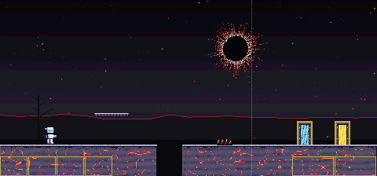
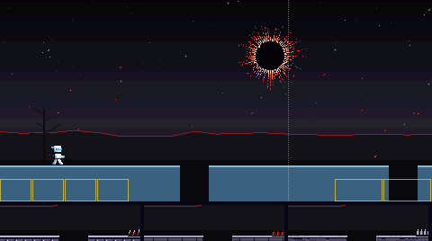
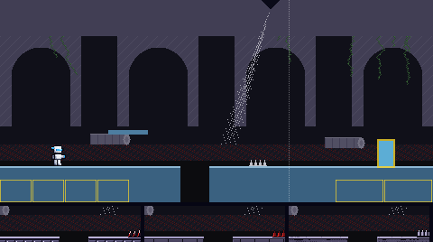
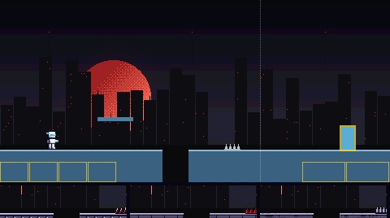
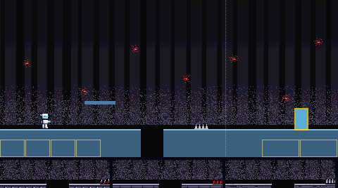
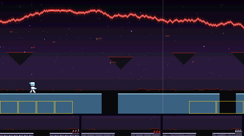
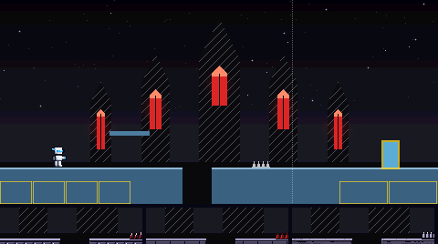
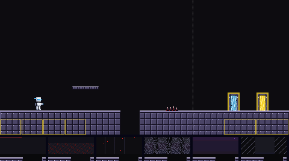
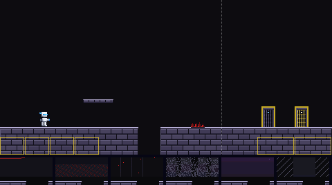
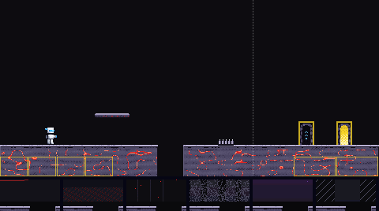

The way to Eclipse Man's door. Six backdrops, and three materials (each a floor, platform, spikes, boss door and exit door), all built from his colours. Batch 3 of 3.
Picked by the owner on 6 Nov 2026, in their words: "1a but with the cracked glowing stone from c".
So: backdrop 1, the total eclipse; from material A, the glass tile platform, the black glass shards and the energy doors; and from material C, the cracked stone ground with red light glowing in its cracks. Nothing was redrawn. Not in the game yet.
Backdrop 1 behind material C's cracked stone ground, with material A's tile platform, glass shards and energy doors, and the player standing still. Red motes drift up past the black sun. The boss door is on the left, the exit door on the right.

Each is shown behind today's plain pieces, so only the backdrop changes. The strip under it is its pit edge with floors A, B and C in front. The two marked MOVING scroll in layers, the far ones slower; their pictures move.






Each shows the floor with a pit, a platform, spikes, the boss door (left) and the exit door (right), in front of today's flat colour. The strip under it is its pit edge against backdrops 1 to 6. The contrast numbers are the worst against any of the six; the game asks at least 2 for the ground, 4.5 for its lit edge and 4.5 for the white player on it.


